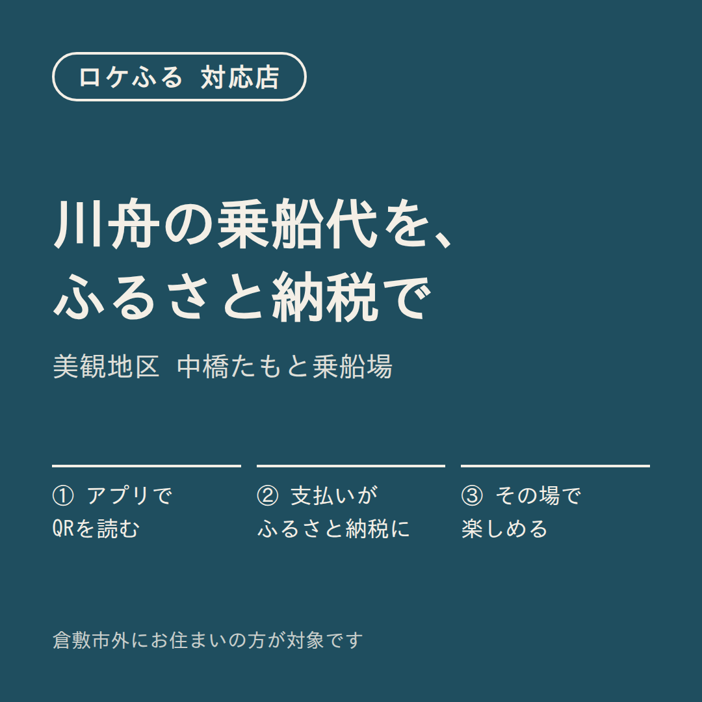
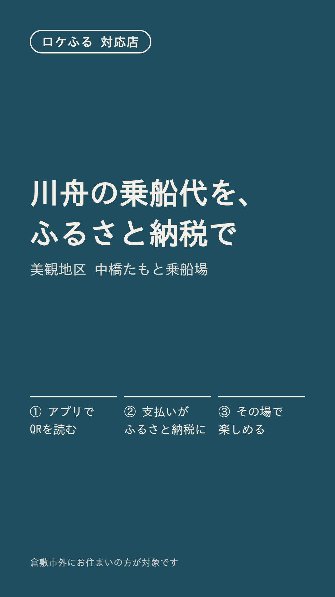
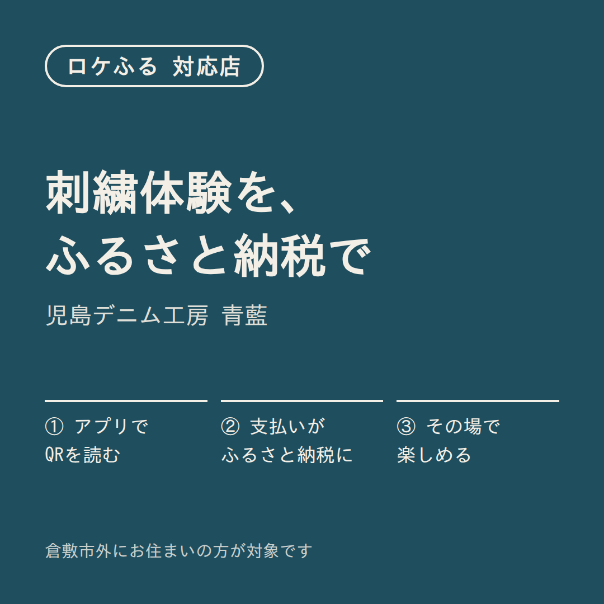
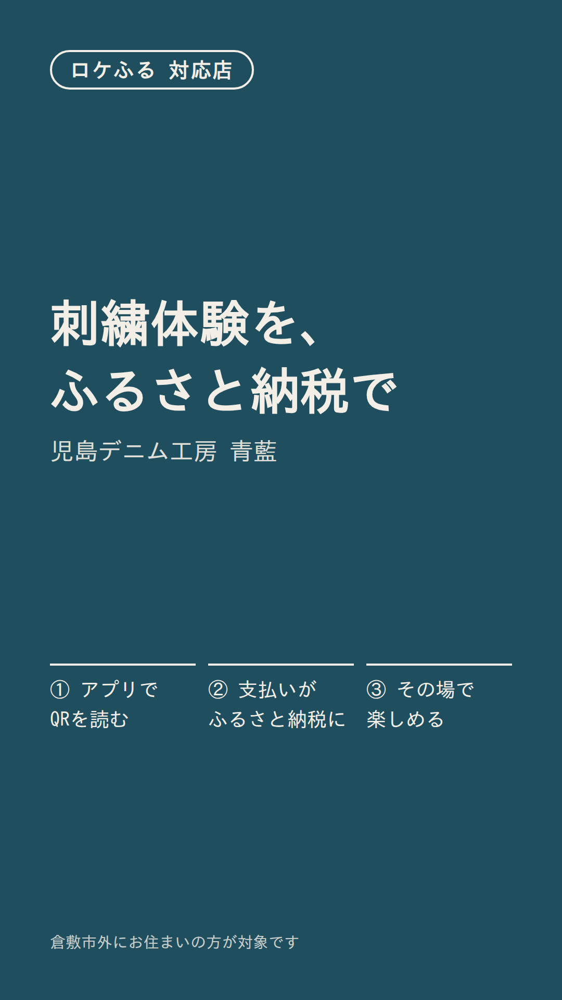
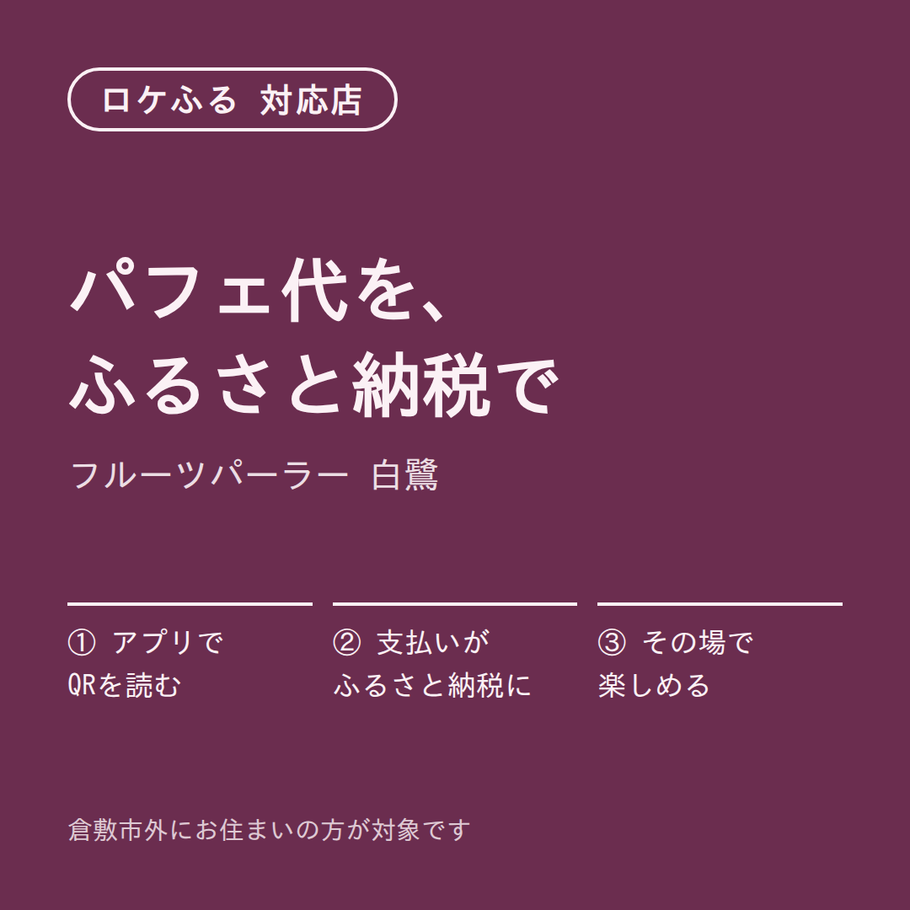
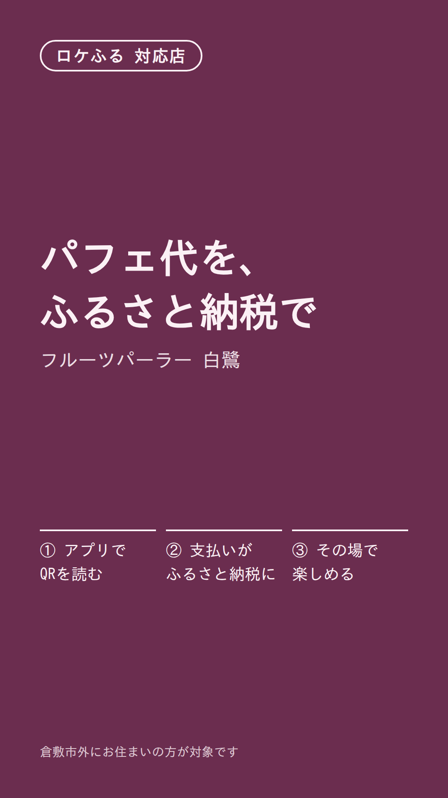
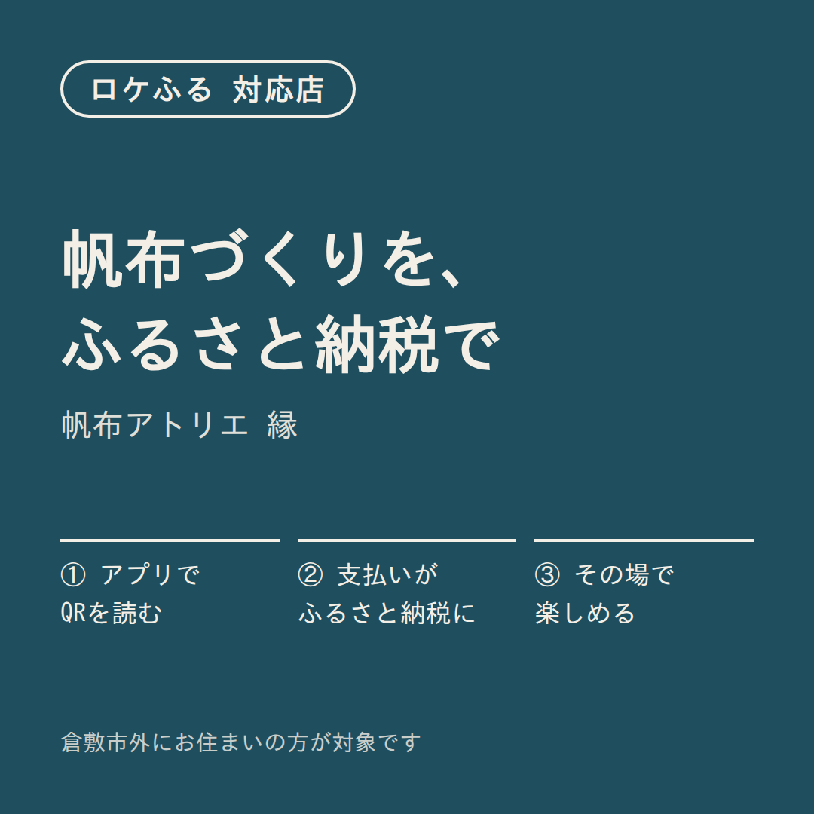
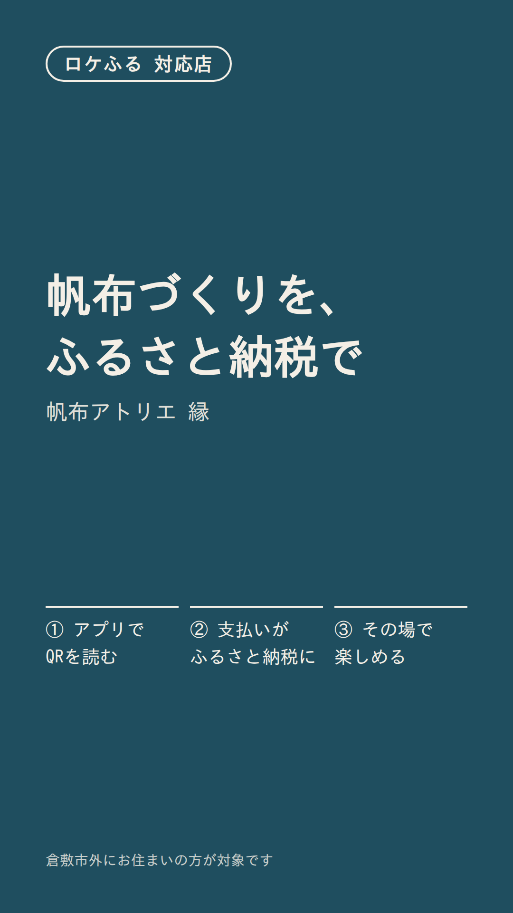

倉敷川舟の会美観地区・体験


Instagram 投稿文
倉敷川舟の会では、乗船チケットを「ロケふる」で支払えるようになりました。 乗船場でアプリのQRを読み取ると、乗船代がそのまま倉敷市へのふるさと納税になります。 倉敷にお住まいでない方が対象です。 10/18からは秋の夕方便も運航しています。 #倉敷美観地区 #川舟流し #ふるさと納税 #ロケふる
ストーリーズの一言
乗船代、ふるさと納税で払えます🚣
Googleマップ（店舗情報）への投稿
ロケふる対応：乗船チケットの代金を、アプリでふるさと納税として支払えます（倉敷市外にお住まいの方）。10/18〜11/30は16時台の夕方便も運航。
加盟店に渡す前の確認事項
- 夕方便の期間は加盟店データと一致
児島デニム工房 青藍児島・体験


Instagram 投稿文
児島デニム工房 青藍の体験は「ロケふる」で支払えます。 会計時にアプリでQRを読み取ると、体験代が倉敷市へのふるさと納税になります。 倉敷にお住まいでない方が対象です。 秋限定の糸色「柿渋オレンジ」もご用意しています。 #児島ジーンズ #児島 #ふるさと納税 #ロケふる
ストーリーズの一言
体験代、ふるさと納税で払えます🧵
Googleマップ（店舗情報）への投稿
ロケふる対応：デニムの裾上げ・名入れ刺繍体験の代金を、アプリでふるさと納税として支払えます（倉敷市外にお住まいの方）。
加盟店に渡す前の確認事項
- なし
フルーツパーラー 白鷺美観地区・食事券


Instagram 投稿文
フルーツパーラー 白鷺では、季節のフルーツパフェのお食事券（2名分）を「ロケふる」で支払えます。 アプリでQRを読み取ると、お支払いがそのまま倉敷市へのふるさと納税になります。 倉敷にお住まいでない方が対象です。 10月からは岡山産ぶどうのパフェをご用意しています。 #倉敷カフェ #パフェ #ふるさと納税 #ロケふる
ストーリーズの一言
パフェ代、ふるさと納税で払えます🍇
Googleマップ（店舗情報）への投稿
ロケふる対応：季節のフルーツパフェのお食事券（2名分）を、アプリでふるさと納税として支払えます（倉敷市外にお住まいの方）。10月から岡山産ぶどうのパフェを提供中。
加盟店に渡す前の確認事項
- ⚠ 通常のお会計にも使えるかは不明のため、お食事券に限って書いています（加盟店に要確認）
帆布アトリエ 縁美観地区・体験


Instagram 投稿文
帆布アトリエ 縁の体験は「ロケふる」で支払えます。 会計時にアプリでQRを読み取ると、体験代が倉敷市へのふるさと納税になります。 倉敷にお住まいでない方が対象です。 11月の土日は、親子で作れるミニトート（30分）も開催します。 #倉敷帆布 #倉敷美観地区 #ふるさと納税 #ロケふる
ストーリーズの一言
体験代、ふるさと納税で払えます👜
Googleマップ（店舗情報）への投稿
ロケふる対応：帆布のトートバッグづくり体験の代金を、アプリでふるさと納税として支払えます（倉敷市外にお住まいの方）。11月の土日は親子ミニトート体験も。
加盟店に渡す前の確認事項
- なし